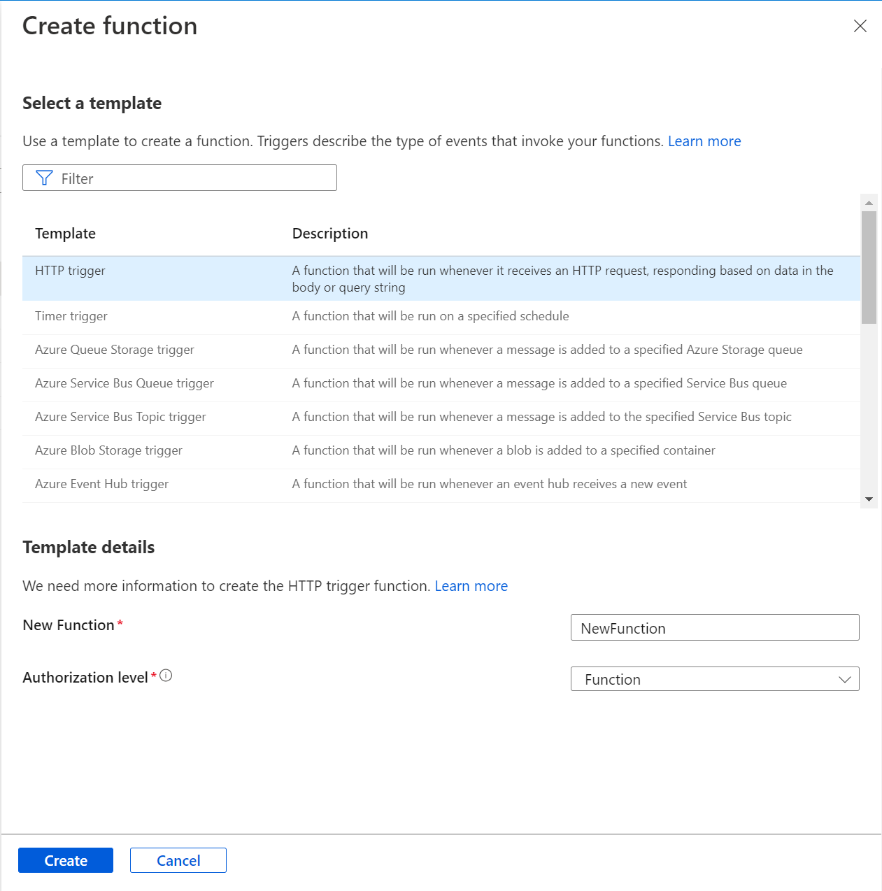
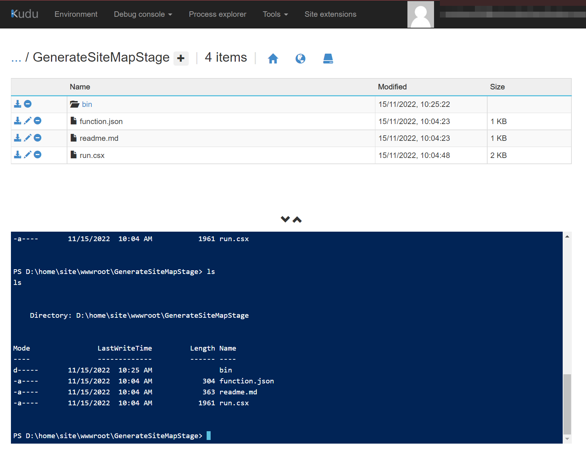
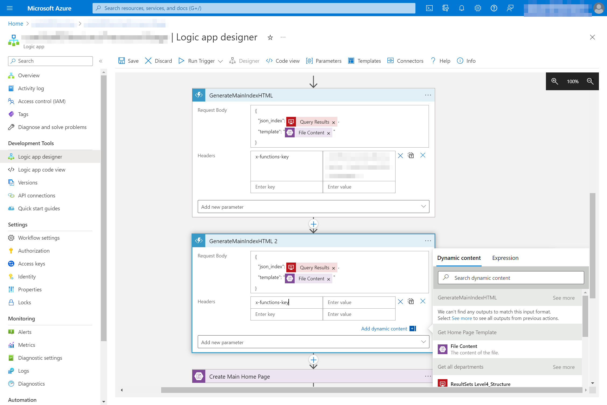

Upgrading Azure Logic Apps
One of our static site generators consists of a set of Azure Logic Apps that perform various tasks, from aggregating data to constructing Web pages. The Logic Apps will each call an Azure Function to build specific elements of the Web site. For example, the myDirectoryProcessor Logic App calls the GeneratorHTML and GenerateMainIndexHTML Functions.
Upgrading the service will involve modifications to the Function App and the Logic Apps that use it.
- The Function Apps are deployed to myProfileHTMLGenerator.
- The Logic Apps are deployed to the myDirectorySite resource group.
Upgrading the Function App
The Function App includes the following functions, each performing a specific operation that’s involved in the generation of the site:
- GenerateMainIndexHTML
- GenerateSiteMap
- GeneratorHTML
Each function in the app will consist of:
- Code: This is the C# function code. Most the functions will use assembly references that are native to .NET, and usually include directives to pull a dependency from a common repository.
- Integration: This section is presented in Azure as a ’no code’ designer that defines the HTTP trigger, input(s) and the output method.
- Function Keys: A function key is an auto-generated API key for the function. A Logic App will require this.
Unfortunately it doesn’t appear possible to upgrade the .NET runtime of the Function App itself, so an upgrade will require a new instance of the app and all its functions. The process for doing this is relatively straightforward, though.
- Create a new Function App. This will have a newer .NET target framework than the existing one, and it’s where new instances of the functions will be created.
- Create new instances of the functions in the Function App. In the case of our static site generator, all the functions will have HTTP triggers.

- Replicate the function’s code. In this new function, navigate to the ‘Code + Test’ section and replace all the code with that from the older instance of the function.
- Check the integrations. Usually it’s not required to make any changes within the ‘Integration’ section for the new function, but it should be compared with the Integration of the old function anyway, to ensure there are no mismatches.
- Test the function. Finally, it’s a good idea to test the new function. In the ‘Code + Test’ section, click the ‘Test/Run’ option above the code window. It might be necessary to copy the JSON body from the test for the older function. If all goes well, there will be success messages in the log window and the output.
Adding a Custom Assembly/DLL
One of the functions references a custom DLL as a dependency. This must either be copied over from the existing function or compiled and uploaded. In order to do this, we must access the Function App’s filesystem.
- In the main Function App view, where the functions are listed, select ‘Advanced Tools’ under the Development Tools heading, and proceed to the Kudu site.
- In the top navigation menu, select ‘Debug console’ and ‘PowerShell’.
- With the console view displayed, it’s possible to navigate the Function App’s file system through PowerShell or the graphical interface above it. The location of the DLL(s) used will be /site/wwwroot/GenerateSiteMap/bin. The SiteMap.dll file can be downloaded and copied/uploaded to the same path in the new Function App’s filesystem.

Upgrading the Logic Apps
The next stage of the upgrade is to modify the myDirectoryProcessor Logic Apps themselves. In the view for the myDirectorySite resource group, it might be easier to filter the list for ‘Logic Apps’. In this case, there are several.
-
Select a Logic App. The actions and their configurations can be viewed and modified in the Logic app designer. Some of these actions will reference the functions in the Function App.
-
Under/after the existing function reference, add a new step (Add an action). We want to choose Azure Functions as the operation for this step. This selection will open a view listing the available functions.
-
Copy the request body from the preceding step in the Logic App, and add an x-functions-key field (select Header from the menu and add x-functions-key as a key). The x-functions-key value for this can be found in the function it’s referencing, under the Function Keys section. When done, delete the preceding step that’s referencing the old function.

- Check other references to the older functions. References to functions might also be found nested within other actions within the Logic App, so they should be checked also. To change the step to reference the new function(s), repeat the above process.
Managed Identity
When a Logic App is created, an object ID for it is added to a registry, and permissions might need to be granted for that in order for the Logic App to run. To do this, we need to determine: a) The Object (principal) ID. This can be viewed under the Settings -> Identity section in the Logic App view. b) The Azure storage account being used. A reference to this should exist somewhere in the Logic App designer.
Find the storage account. It will be in the Storage accounts section of the Azure Portal. In the selected account, the section of interest is ‘Access Control (IAM)’.
The Logic App will require Storage Blob Data Reader permissions.